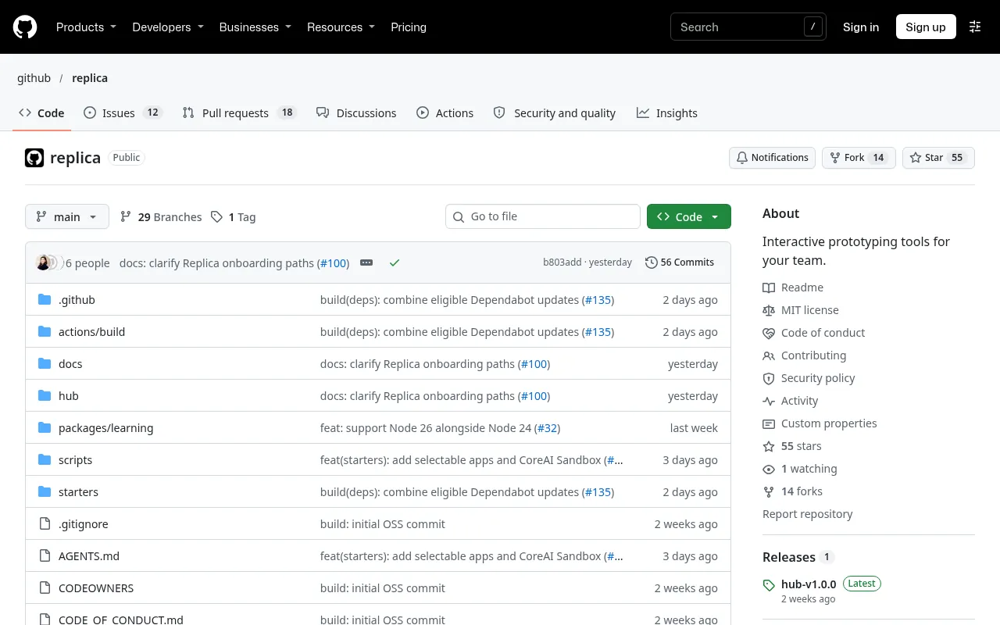
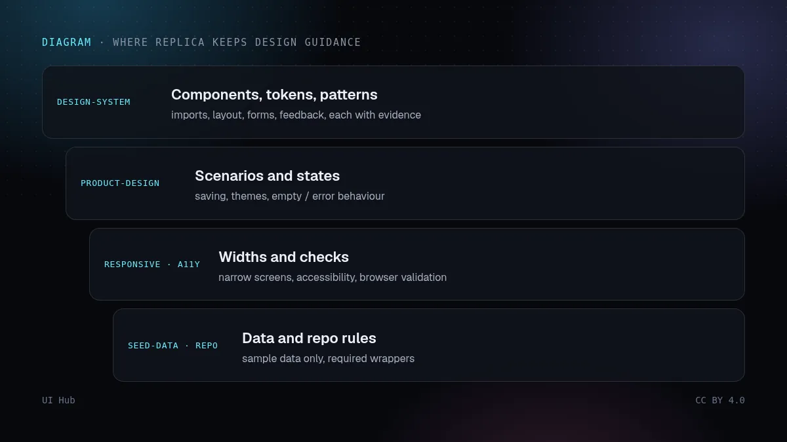
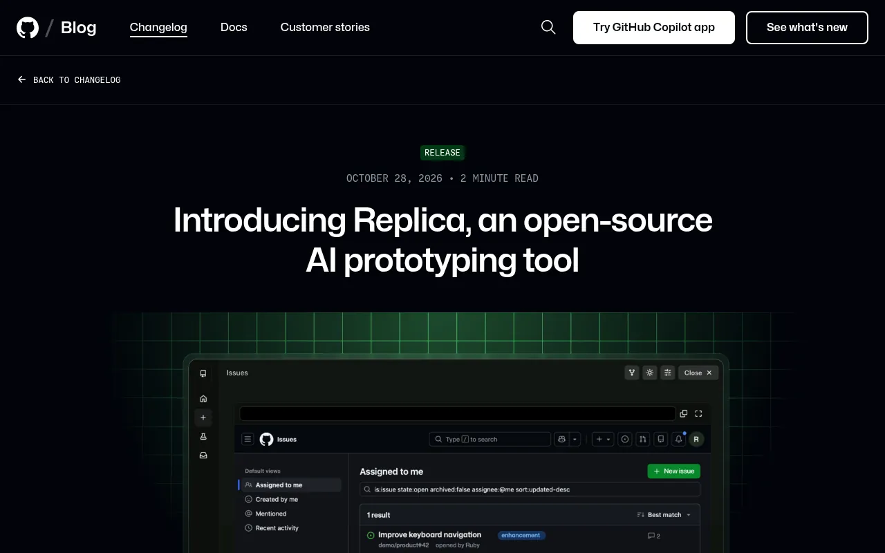

大多数「提示生成界面」工具都从一张空白页和模型心目中的「干净 SaaS 应用」开始。你会得到一个精致但千篇一律的结果，评审的第一个小时都花在解释「我们产品没有这种侧栏、不是这种按钮、空状态也不长这样」上。10 月 28 日，GitHub 开源了由 GitHub Design 与 Microsoft CoreAI Design 打造的原型工具 Replica，它想把顺序调过来：先由设计师写好并批准规则，团队里的任何人再在规则之内做原型。


你运行 /setup-skills，把 Copilot 指向经过批准的资料（产品文档、设计系统文档、组件和 Token 包），它会起草规范。文档写得很明确：起草不会让任何东西生效；设计师和设计系统维护者评审草稿，生效是另一次单独的批准。最终得到一组上下文文件，每个只管一件事：DESIGN-SYSTEM.md 管组件、Token 和模式，PRODUCT-DESIGN.md 管场景和状态行为，RESPONSIVE-DESIGN.md 管宽度，另外还有无障碍、浏览器验证、示例数据和仓库规则。
内置技能对这些上下文的用法很严格。设计系统评审技能只读生效目录，从不读草稿；标为 proposed-default 的规则只算提议，不算政策；缺少必要证据时，这项检查记为人工检查，绝不算通过，并且明确要求不要猜组件或 Token。DESIGN-SYSTEM.md 的模板也拒绝敷衍的上下文：「有 TextInput 组件」并不能回答「校验错误怎么展示」。
它还有反馈闭环。接上 Hub 后，/review-hub-feedback 会在多个原型的评审中找反复出现的主题，/prepare-feedback-proposals 把选中的发现变成对规范的修改提议，每条都先展示、再由你批准。评论改进的是规则，而不只是收到评论的那一个原型。
Replica 与其说是一个新的生成器，不如说是包在生成器外面的一套工作流：一个原型一个分支、只用示例数据、提交前先问、未经批准绝不推送或发布。对于产品经理、工程师和设计师一起做原型的团队，这个形态是对的。最有价值的想法可以直接带走：按负责方拆分规范、区分草稿和生效、让「不知道」显性化。我们见到的大多数智能体上下文文件，都是一份没人负责、没人评审、却被每个智能体奉为圣旨的长 AGENTS.md。
代价也是真实的。它默认你用 Copilot 应用（macOS 或 Linux）；要分享，还得有人愿意运维一个带通配符 DNS 的 Hub。画布从另一个源（origin）代理预览，所以依赖自身源做存储或登录的应用可能要额外处理。文档自己也提醒了 AI 生成界面里我们最常见的失败：智能体用长得像的替代品而不是你真正的组件。规范能降低这个风险，但不能消除它，所以要查 import，而不是看截图。
<button> 就算检查失败。# .agents/context/ （一个文件管一件事，评审后才使用）
DESIGN-SYSTEM.md # import、Token、布局、表单、反馈——每条附文档链接
PRODUCT-DESIGN.md # 场景、保存、空 / 加载 / 错误状态行为
RESPONSIVE-DESIGN.md # 必须支持的宽度，375px 下什么会折叠
ACCESSIBILITY.md # 键盘、对比度、读屏要求
SEED-DATA.md # 示例数据规则（不用真实客户）
REPOSITORY.md # 必须使用的封装层、分支与提交规则
# drafts/ 永远不作为生效上下文读取；"proposed-default" ≠ 政策
Replica 的效果取决于你喂给它的规范。给智能体的设计 Token 和 Claude 与 Cursor 的设计技能 讲了怎么写这些上下文；用 Lint 把智能体拉回你的设计系统 讲了事后怎么抓住「长得像」的组件。Replica 和 v0、Lovable、Figma Make、Magic Patterns 的定位对比，见提示生成界面工具横评；Figma 自己的组件库规范，见 Figma Make 与 Figma 智能体。